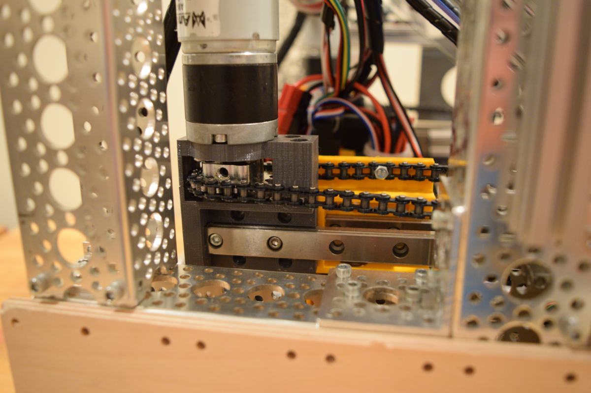
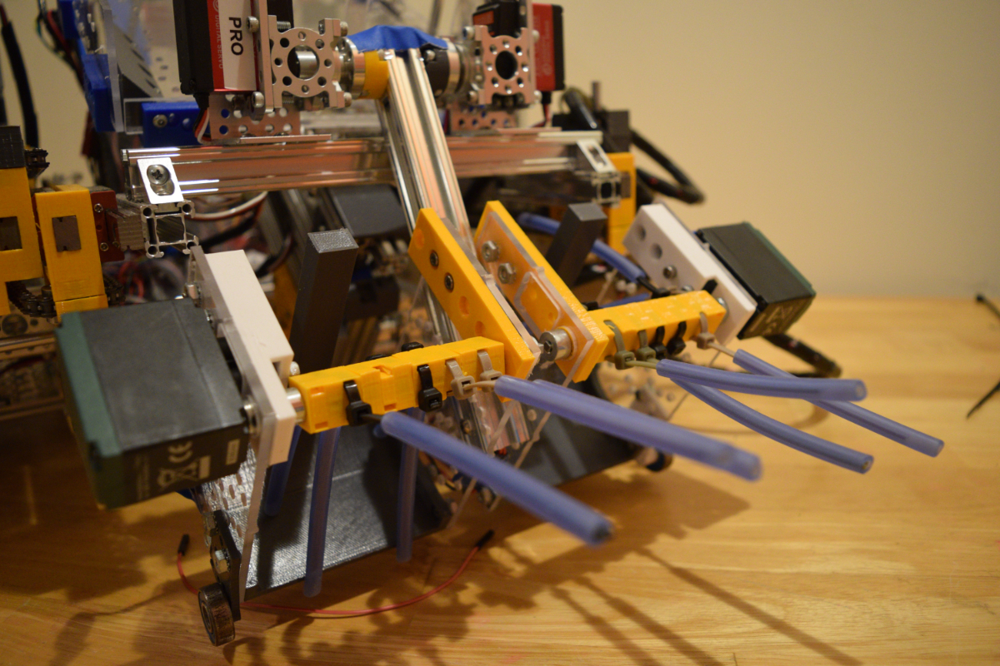
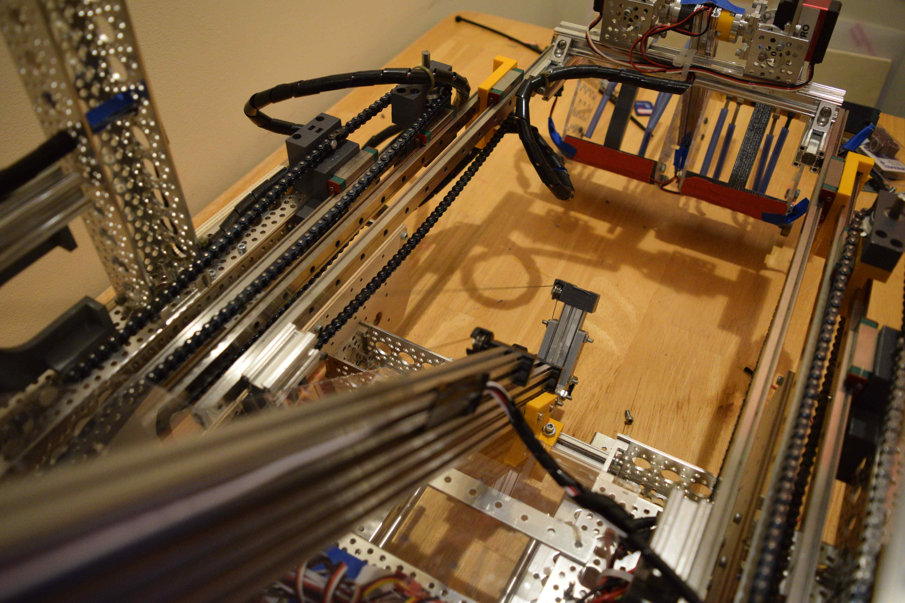
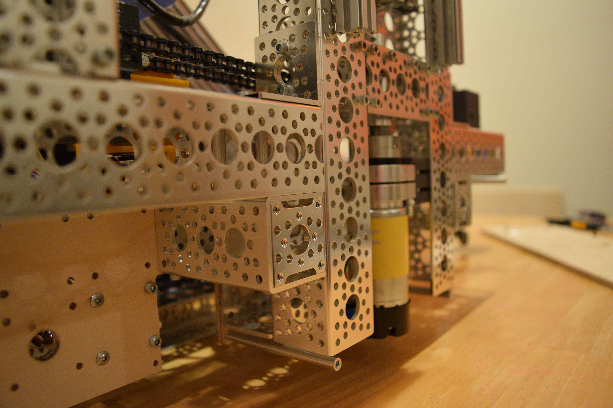
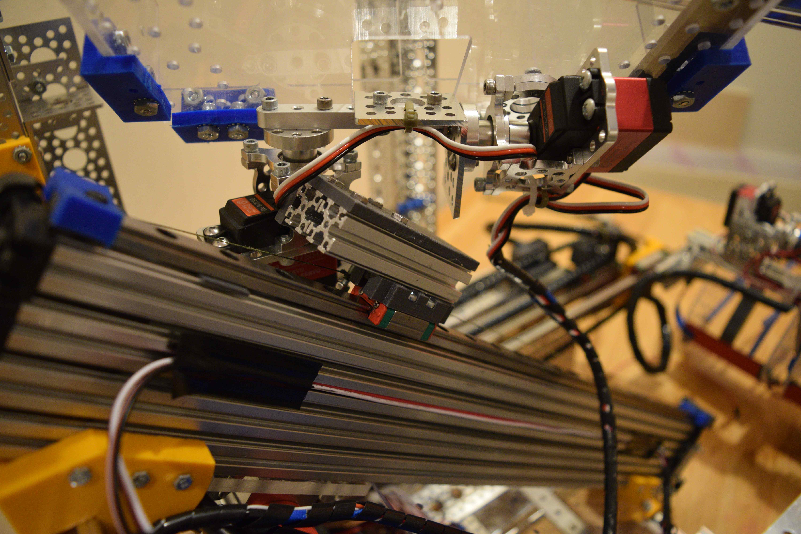
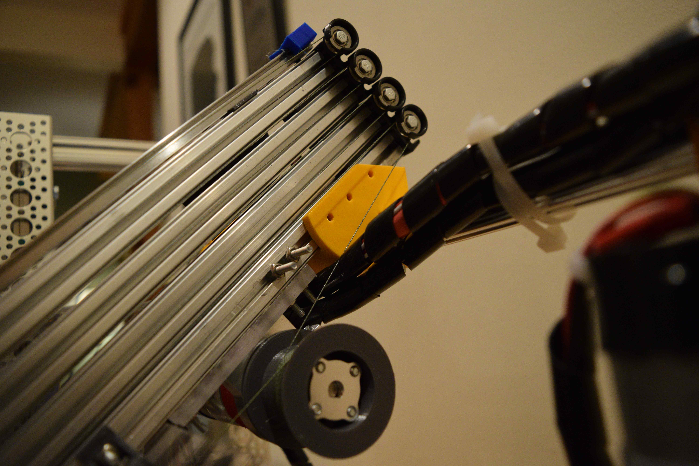
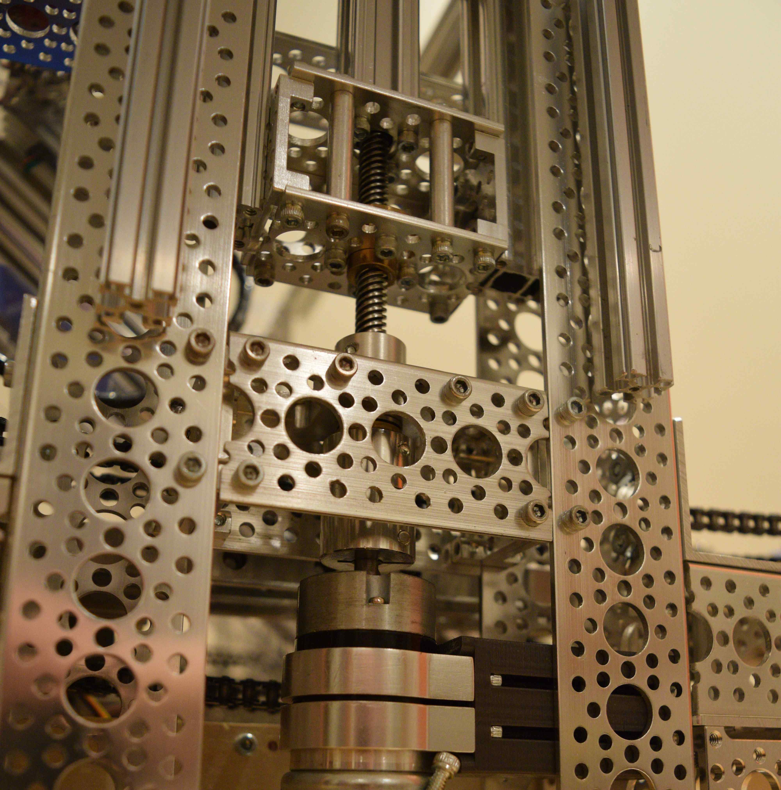
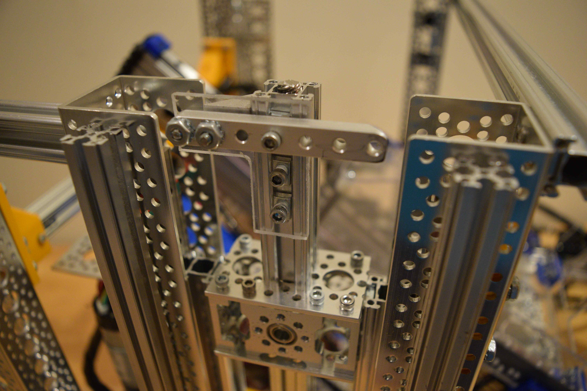

This robot was designed to compete in FIRST Tech Challenge's "Rover Ruckus" game. The primary scoring task was to remove plastic balls and cubes from a walled-off section of the field (seen at left above) and score them into the "Lander" in the center of the field. Only two balls or cubes could be handled by the robot at a time, and they needed to be sorted into separate sections of the Lander.
The intake on this robot needed to extend horizontally to reach over the wall obstructing the balls and cubes. I created a horizontal extension system using 3 stages of linear rails. The sliding rail on each stage is connected to a loop of chain on the previous stage. The result is that pushing out the first stage causes the subsequent stages to extend simultaneously.
The pushing of the first stage was accomplished using a DC motor mounted vertically to a 3D-printed part. This motor turned the first chain loop directly, thereby moving all stages of the lift. This motor moves along the length of the robot as all of the stages extend.
Since the robot can only hold two balls or cubes at a time, I decided the best strategy was to use an intake split into two compartments, with two individual DC motors driving each side. Once one ball or cube is collected, the other side remains spinning until the second is collected. Silicone tubing proved to be the best material for gripping the relatively slippery balls and cubes; I inserted zip ties into each tube to make them stiffer.
Looking down the scoring arm at the extending intake.
The hanging system sits between the wheels (removed in this picture).
Since the robot can only hold two balls or cubes at a time, I decided the best strategy was to use an intake split into two compartments, with two individual DC motors driving each side. Once one ball or cube is collected, the other side remains spinning until the second is collected. Silicone tubing proved to be the best material for gripping the relatively slippery balls and cubes; I inserted zip ties into each tube to make them stiffer.
I first built a 2-stage version of the horizontal extension for testing. Only the first stage needs to be moved, and this causes the second stage to extend simultaneously.
I used an angled multi-stage lift made from aluminum extrusions and Delrin friction sliders to bridge the gap between the robot and the Lander. This practically eliminated the need for the robot to move in order to score minerals, greatly improving our speed.
A two-servo gimbal allows the box that scores the minerals to both rotate and tilt. Although the rotating function wasn't shown in the video above, it helped deposit balls and cubes in the correct place if the robot was in a different location on the field - a helpful feature in competition matches.
The robot must start hanging from one of the metal hooks on the side of the lander at the beginning of the match, and receives points for hanging again at the end. I sandwiched a leadscrew between two linear rails to create a hanging mechanism that couldn't easily be back-driven.
The double-sided hook used for hanging, made from polycarbonate ang aluminum. The left side held the robot in a more stable position at the start of the match; the right side was easier to insert to hang at the end.